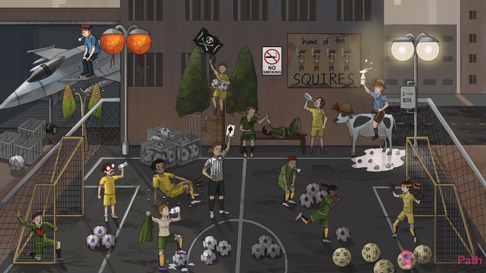

Soccer ball: sarcoidosis (a multisystem granulomatous disease with major pulmonary findings)
Intact macro-CAGES: sarcoidosis is associated with non-caseating granulomas (a collection of macrophages without an area of central necrosis)
Black female soccer captain: sarcoidosis is most common in African Americans (particularly young females between 20-39)
No smoking sign: sarcoidosis is more common in non-smokers
Helper T squires: CD4+ helper T-cells are activated in Sarcoidosis
“BAL” bottle: bronchoalveolar lavage shows an elevated CD4+ to CD8+ ratio (> 2:1) in sarcoidosis
No reaction to feather: sarcoidosis can cause anergy to common skin antigens that usually elicit type-IV (delayed) immune reactions (e.g. Candida, PPD test)
Antibody keys: sarcoidosis can cause polyclonal hypergammaglobulinemia (due to Helper T cell dysregulation)
Multiple purple panels: granulomas may contain multinucleated giant cells (formed by the fusion of activated macrophages)
Ball with star panels: giant cells may contain asteroid bodies (stellate inclusions)
Show-man with purple cleat: granulomas may contain Schaumann bodies that show up as a purple spot on histology
Calcified leather cleat: Schaumann bodies contain laminated calcium and protein
Balls in the field: non-caseating granulomas can be found throughout the lung interstitium in sarcoidosis
Soccer balls at the midline: non-caseating granulomas can occur in hilar and paratracheal lymph nodes → hilar lymphadenopahty
Hilar soccer balls in lung tree: in sarcoidosis, enlarged bilateral hilar and mediastinal lymph nodes can be seen on chest x-ray
Fibrotic lung tree: in sarcoidosis, pulmonary granulomas can be replaced by diffuse interstitial fibrosis
Dyspneic player: pulmonary sarcoidosis presents with a gradual onset of dyspnea (on exertion)
Coughing player: pulmonary sarcoidosis can present with a dry cough
Skinny goalie with flame bandana: sarcoidosis presents with other constitutional symptoms (malaise, fever, anorexia, weight loss)
Painful spotted shin guards: sarcoidosis can present with erythema nodosum (raised red painful nodules on anterior legs; no granulomas)
Gravel nodules: sarcoidosis can present with subcutaneous nodules (non-painful; contain abundant granulomas)
Purple face paint: sarcoidosis can cause lupus pernio (violaceous rash on nose and cheeks)
Blurry red rimmed goggles: sarcoidosis can cause anterior uveitis → redness, blurry vision, glaucoma
Retina street lights with broken wires: sarcoidosis can present with retinal and optic nerve involvement → vision loss
Dry water bottle: sarcoidosis can present with lacrimal and salivary gland involvement → dry eye and dry mouth
Liver spot cow: sarcoidosis can involve the liver → granulomatous hepatitis
Restrictive net: cardiac sarcoidosis may cause restrictive cardiomyopathy
Raised milk glass: Sarcoidosis can cause hypercalcemia (due to hypervitaminosis D)
1-α Box: activated macrophages in granulomas produce 1-α-hydroxylase (converts Vitamin D into its active form, 1-25-dihydroxyvitamin D)
Sunny street lights: extra 1-α-hydroxylase produced in the granulomas may lead to hypervitaminosis D → hypercalcemia
Stones in leaked milk: sarcoidosis can present with hypercalciuria → calcium kidney stones
Raised ACE card: sarcoidosis can present with increased levels of angiotensin converting enzyme (ACE) (produced in the granulomas)
Moon face balls: progressive sarcoidosis can be treated with glucocorticoids
building aircraft: beryllium dust is found in nuclear and aerospace industries (exposure can lead to berylliosis)
Macro-CAGES with soccer ball: berylliosis presents with non-caseating granulomas (similar to sarcoidosis)
Particles falling on top of fibrotic lung tree: interstitial fibrosis in berylliosis may be more prominent in upper lobes